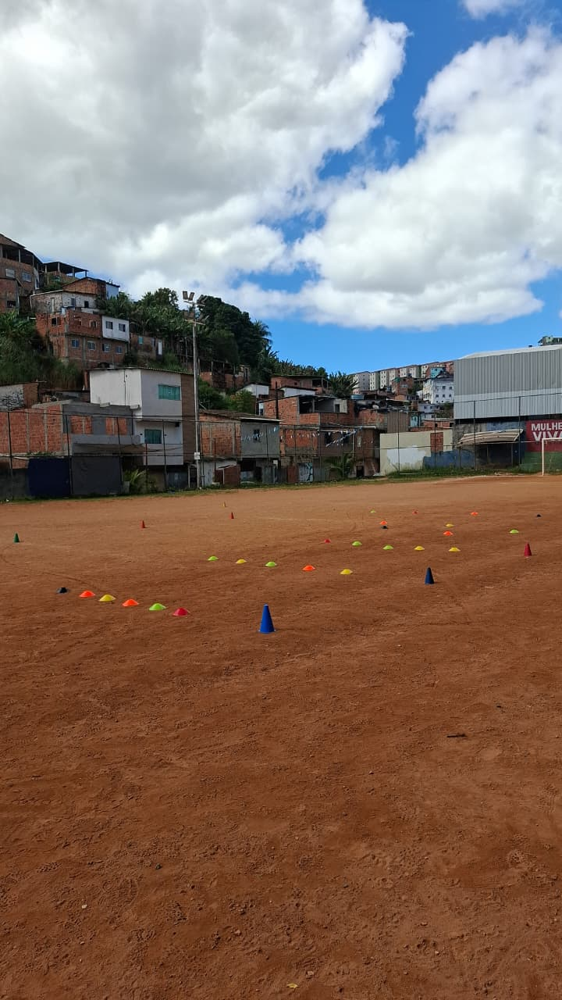
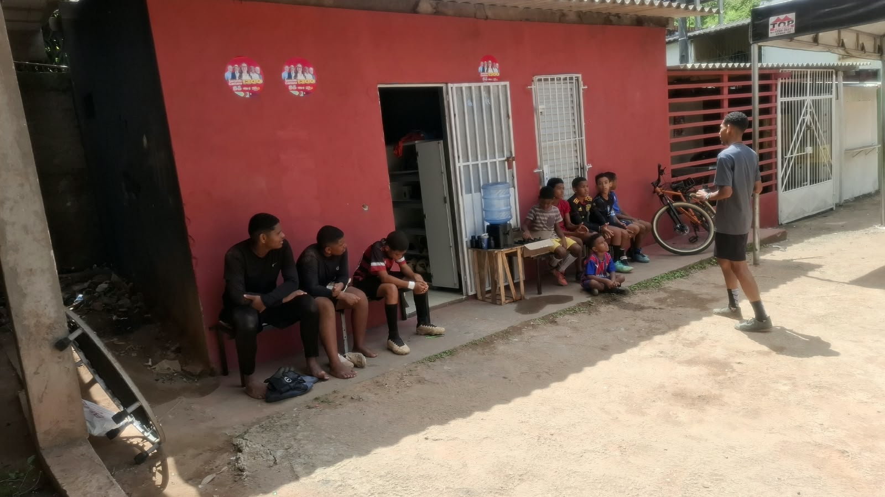
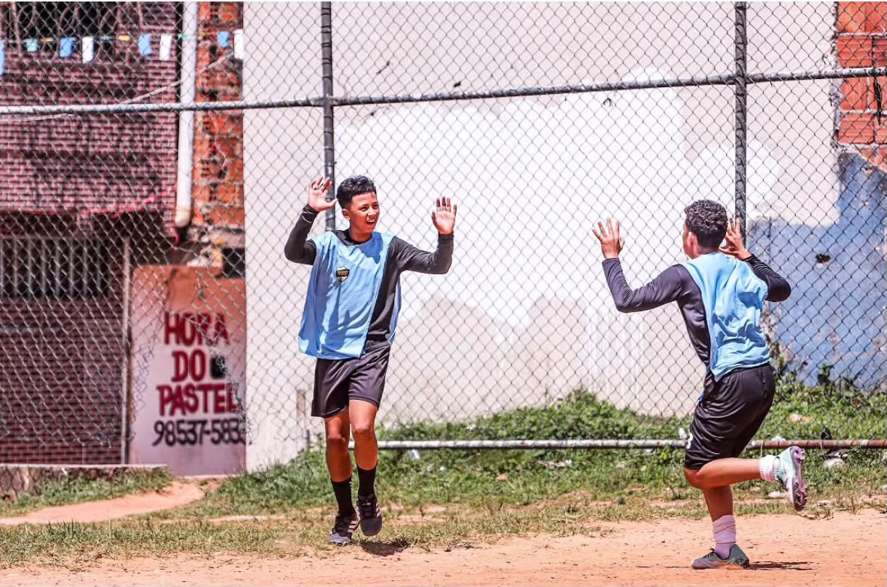
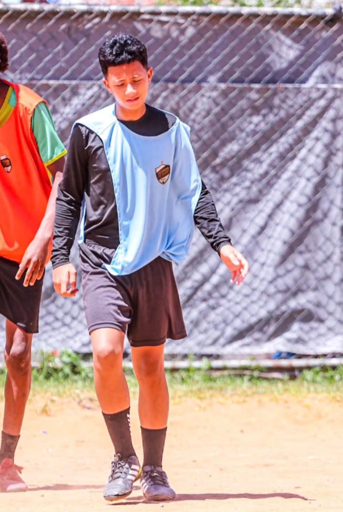
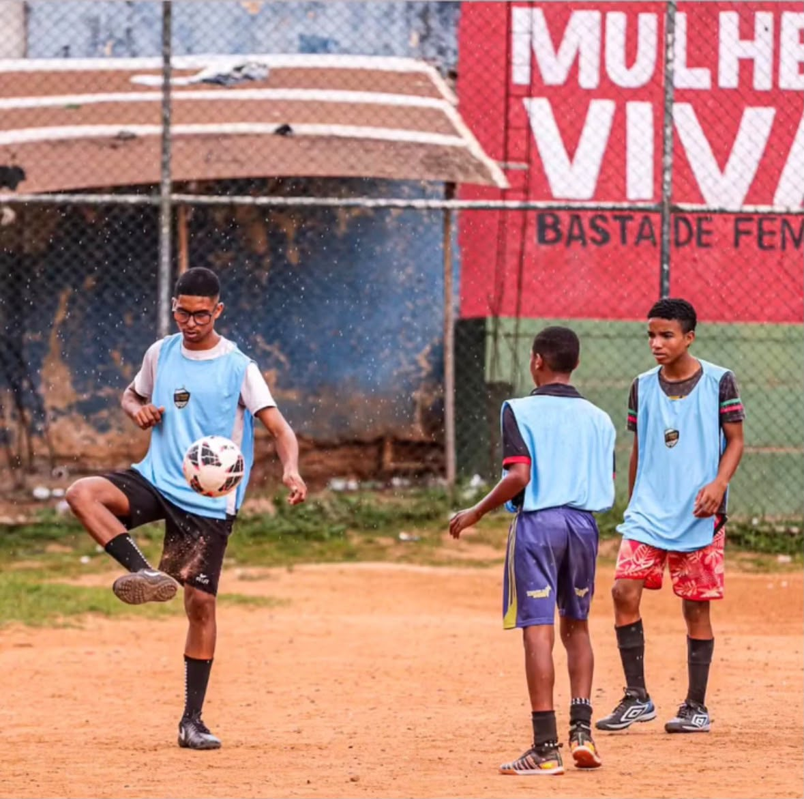

NOSSO MAIOR TITÚLO É FORMAR
CRIANÇAS EM CIDADÃOS DE BENS
Um projeto social criado para formar atletas e cidadãos por meio do futebol, com acolhimento, disciplina e oportunidades para meninos e meninas.
7-20
Faixa etária atendida
4
Lideranças no projeto
3
Dias de atividades
Uma história feita de legado e recomeço
O Meninos De Ouro nasceu de um legado de cuidado, ensino e amor pelo futebol. Hoje, esse propósito continua vivo em uma nova fase do projeto.

MDO
Legado que continua vivo
O projeto começou com Noel, seu criador, que infelizmente já não está entre nós. Anthony foi aluno dele e carregou consigo os ensinamentos e a vontade de manter esse sonho vivo.
Mais tarde, Anthony recriou o projeto e convidou Erick Prince para assumir a direção de mídia, Everton Reis para atuar como CEO e instrutor e Maicon Lopes como auxiliar de instrução. Everton também já mantinha um projeto de treinamento para meninos, contribuindo para essa reconstrução.
Noel inicia o projeto
Noel foi fundador do Meninos De Ouro e dedicou seu trabalho à formação de jovens por meio do futebol.
Uma nova fase com Anthony
Anthony, que foi aluno de Noel, recriou o projeto com Erick, Everton e Maicon para manter esse propósito vivo.
Nosso grito
Uma voz, uma equipe e um propósito.
Estádio Arena da Baixada
Futebol, disciplina e convivência para meninos e meninas de 7 a 20 anos.
Horários dos treinos
As atividades são abertas para participantes de 7 a 20 anos, no masculino e no feminino.
- Terças e quintas: 8h às 10h e 15h às 17h
- Sábados: 8h às 11h
- Categorias: Masculino e feminino
Apoie o desenvolvimento de jovens por meio do esporte.
Falar pelo WhatsAppProfessores e Comissão Técnica
A excelência dentro das quatro linhas depende de líderes gabaritados. Nossos professores aliam rigor científico, metodologia tática europeia e paixão pelo desenvolvimento do atleta.
 19 anos
19 anos
Anthony Muniz
Ex-aluno de Noel, Anthony recriou o projeto Meninos De Ouro para manter vivo o legado de seu criador e ampliar seu impacto social.
 30 anos
30 anos
Everton Reis
Everton também desenvolvia um projeto de treinamento para meninos e contribui com experiência prática para a reconstrução do MDO.
 22 anos
22 anos
Erick Prince
Cuida da comunicação e da presença digital do Meninos De Ouro, ajudando a aproximar o projeto da comunidade e de novos parceiros.
 15 anos
15 anos
Maicon Lopes
Categorias de 7 a 20 anos
O Meninos De Ouro recebe participantes de 7 a 20 anos, no masculino e no feminino, usando o futebol como ferramenta de desenvolvimento e transformação social.
Futebol para formar pessoas
As atividades são conduzidas com disciplina, respeito e atenção ao desenvolvimento de cada participante, valorizando o aprendizado dentro e fora do campo.
Inclusão
Espaço para meninos e meninas desenvolverem seu potencial.
Disciplina
Rotina de treinos baseada em compromisso e responsabilidade.
Convivência
Aprendizado coletivo, respeito e cuidado com o próximo.
Oportunidades
O esporte como caminho para novos sonhos e possibilidades.

Fase de Iniciação e Domínio Técnico
O objetivo central não é o resultado no placar, mas a relação afetiva e motora com a bola. Trabalhamos o controle corporal, agilidade, condução e o prazer incondicional de jogar futebol coletivo.

Compreensão de Espaço e Tomada de Decisão
Transição para o campo regulamentar (11x11). Introdução a princípios táticos fundamentais: amplitude, profundidade, compactação defensiva e passe de ruptura.

Intensidade Tática e Desenvolvimento Físico
A fase em que a maturação exige cuidados específicos. Início de musculação preventiva e aprendizado aprofundado dos diferentes modelos de jogo e funções em campo.

Alto Rendimento e Exposição Competitiva
Desenvolvimento esportivo e humano por meio de atividades adequadas a cada faixa etária.

A Última Fronteira Antes do Elenco Principal
Atividades voltadas ao desenvolvimento contínuo, à convivência e à construção de novas oportunidades por meio do esporte.

Próximos Confrontos
Acompanhe o Aurora F.C. em campo pelo time profissional e pelas equipes de base.
Seja Sócio Torcedor Aurora
Apoie o clube, apoie a formação dos jovens da base e tenha prioridade máxima em ingressos e descontos exclusivos.
Sócio Raízes
- 50% de desconto em ingressos de arquibancada
- Entrada gratuita em jogos da Base Sub-15 e Sub-20
- Cartão digital de sócio torcedor
- 10% de desconto na Loja Oficial
Sócio Ouro
- Check-in 100% gratuito em todos os jogos mandantes
- Acesso livre e irrestrito ao Tour da Arena
- Camisa Oficial Anual de presente
- Prioridade nível 1 na compra de ingressos para finais
- 20% de desconto na loja e rede de parceiros
Sócio Eterno
- Cadeira cativa numerada nas cadeiras especiais
- Acesso aos treinos abertos no Centro de Formação
- Encontro anual com os atletas e professores
- Estacionamento incluso em dias de partida
- Nome gravado no Mural de Honra da Arena